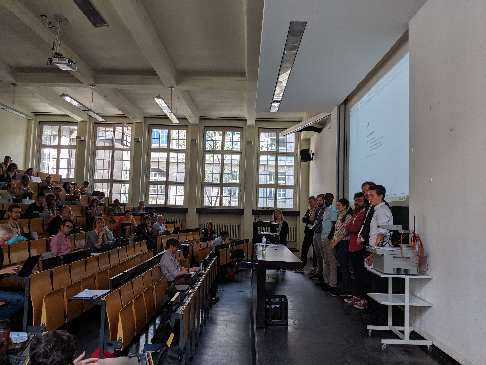

Trip Report - Open Repositories 2019 - Peter Sefton
2019-07-01
This is reposted from the UTS eResearch Website with minor edits.
This year Open Repositories was in Hamburg, Germany. I was funded by my employer the University of Technology Sydney to attend. I gave two presentations, one on our work on scalable research data repositories and other on research data packaging and ran a workshop, more on which is below.
This year was an intense, focussed conference for me. Last year I had a few take-aways from presentations; this year was one of those conferences where the value was in the conversations and in getting down to work.
Keynotes
I didn't get much out of the opening Keynote, from Jeff Gothelf, who's apparently a star in the User Experience (UX) world. It was a pretty generic presentation, with some well timed jokes but not very useful. Ok, UX is important, but when your examples are coming from well-resourced projects what are resource-constrained repository workers supposed to do to improve UX?
My mate Richard Jones from Cottage Labs asked a great question about how we can improve the UX for developers using APIs but didn't get much of an answer.
Even though I would have preferred a more on-topic keynote, it did spark a number of useful conversations in the breaks, including some I had with Richard about how we can build developer-friendly services. I always learn lots from Mr Jones at OR.
The closing Keynote was much more audience-appropriate. Heather Piwowar, who has, like, direct User Experience of Open Repositories gave us all a kind of career-affirming hug; pointing out that the repository people in the room are helping to build huge database of open scholarly information.
We put up and maintain the content, and her Unpaywall site finds it:
An open database of 23,565,946 free scholarly articles. We harvest Open Access content from over 50,000 publishers and repositories, and make it easy to find, track, and use. https://unpaywall.org/
She reckons our time is about to come - that we're at the take-off point for hockey-stick growth. Here's her presentation The Breakout Moment for open repositories is now. On topic, useful and inspiring.
Workshop in data packaging
Eoghan Ó Carragáin, Stian Soiland-Reyes and I ran an all-day workshop on Data Packaging which was well attended - we ran through the background in the morning, what data packaging is all about, why it's important and Eoghan gave us a tour of some of the major efforts going on in the space at the moment. Stian gave more detail on Research Objects, and Marina Soares E Silva talked about recent developments with Mendeley Data.
We structured the discussion around these themes or functions of Research Data Packaging:
- Strategic: Transform scholarly practice, distribute the stuff that makes research complete, focus on redo-ability and reproducibility (eg Research Object) - Self-documenting: Describe the stuff in a programmer friendly way (eg FD, DataCrate), with a view to making it interoperable (eg DataCrate, RO), try to ensure Reusability (RO) - add human readable HTML (DataCrate, DataSpice)
- Self-contained: Bundle stuff (eg Zip, TAR, .dmg, RAR).
- Safe: Make sure the stuff is what it’s supposed to be using checksums (eg BagIt, FD) & Preservation / archival practice
- Serialization Syntax: XML (Legacy systems), JSON (FD) Linked Data (RDF, JSON-LD eg RO, DataCrate)
- Schemas - which one(s) to use?
We did a quick pass on these topics in the morning, looped back to the most popular ones in the afternoon - has some impromptu lightning talks and finished up with a session where we solicited Use Cases to go into the RO-Crate process Thanks go to Paul Walk and Neil Jefferies both of whom I've known for a decade or so for showing up and contributing enthusiastically.
My conference

I was lucky in my choice of converted water tower to stay in. I got to have breakfast with Martin Fenner from DataCite (we met back in 2011 at the first Beyond the PDF meeting). He was on the list for our Monday workshop but couldn't make it. I filled Martin in on what we're doing with RO-Crate - how we're using Schema.org metadata in JSON-LD. Martin was completely on-board with using Schema.org, and told me that if we have that, then using the DataCite XML format would probably be redundant. If that works out then that simplifies things - we need to talk more about this on the RO-Crate Project.
Martin also seemed to me to be frustrated that there are still a number of packaging efforts with no clear leader - simple, I said, just endorse RO-Crate when it comes out as DataCite approved :)
Stian and Eoghan and I took the opportunity to get stuck in to editing the RO-Crate draft, and getting to know each other a bit - forging a strong editorial team for RO-Crate.
I chaired a short-presentation session (7 minutes, 24 slides) - I like to get the presenters all down on stage at the end, get them to re-introduce themselves, give them a minute to tell us anything they forgot in the heat of presentation then get a discussion going.
Hamburg


Hamburg's a great place to wander around - lots of parks and lots of stickers on garbage bins that I really liked.


Hamburg harbour, where we went for the conference dinner boat ride, is a giant metaphor for Data Packaging. Container terminals as far as the eye can see being loaded and unloaded by giant robot-cranes. Shipping containers are, of course, a triumph of standardization and here you could see them being moved around at industrial scale - just like we're going to do using RO-Crate for Research Data.